Um dos maiores problemas no oceano
Todos os anos, milhões de toneladas de resíduos são
despejadas nos oceanos , ameaçando a vida marinha
e os ecossistemas
costeiros.



O Plástico
Estudos indicam que, se mantido o ritmo atual, em
20 anos a produção de plástico poderá atingir cerca de 800 milhões de
toneladas por ano.
O Brasil
O Brasil supera os EUA e a China no despejo de
plástico nos oceanos, com 0,18 kg por pessoa, em comparação aos 0,01 kg
dos EUA e 0,05 kg da China.

Micro plásticos em carnes